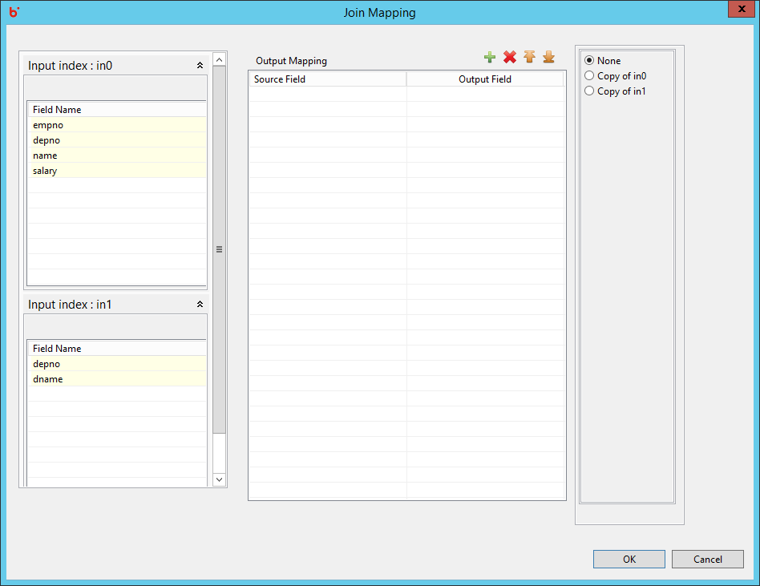
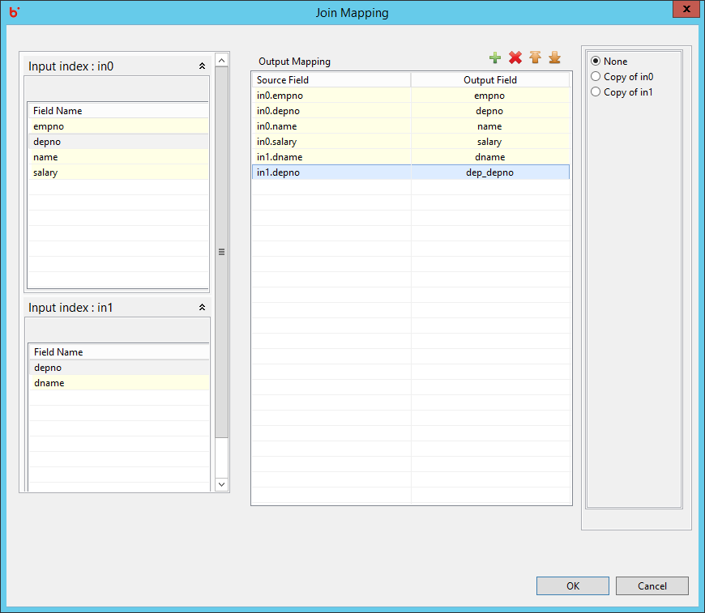
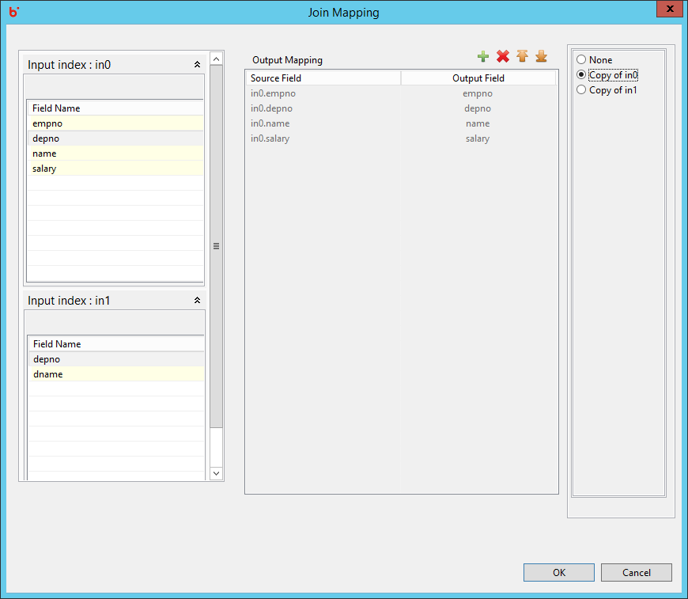
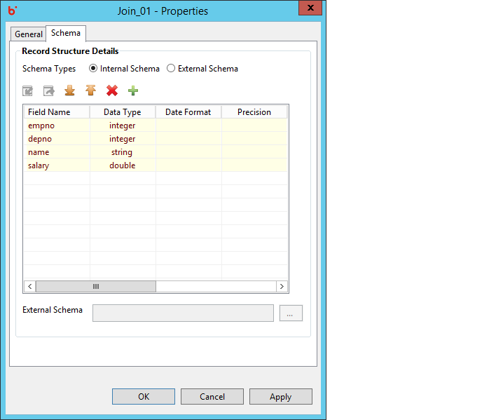

Hydrograph Help
Hydrograph Help
Join Mapping View
Hydrograph Release Version 1.0
Mapping view for the Join component can be viewed by clicking on the Edit button near the Join property on General tab. Input ports along with the input fields arriving from each port is visible at the extreme left of the grid. In the center users can view the Mapping grid containing empty columns for source fields and mapped fields. To the extreme right, user can select between the copy of options for individual input port.

User can drag and drop single or multiple fields in the mapping grid. Those fields that are passed as is in the output are Passthrough fields. Whereas, fields renamed in the output are Map fields or in simple sense aliases for the corresponding input field. In the below example, all fields except 'dep_depno' are passed as Passthrough fields. 'dep_depno' is passed as a Map field. Here, the Copy of option is 'None'.

Copy of option for a particular input port passes the input fields corresponding to that input as is. This means, all the fields of that input port will be passed as passthrough fields. In the below example we have selected 'Copy of in0', hence all fields of the input port 0 are passed into the grid as is. When user selects Copy of for any input port, the fields get displayed in the mapping view, but the view is disabled. Here user will not be able to drag-drop any other fields from available inputs.

Output fields are visible in the schema grid along with their specified datatypes.
